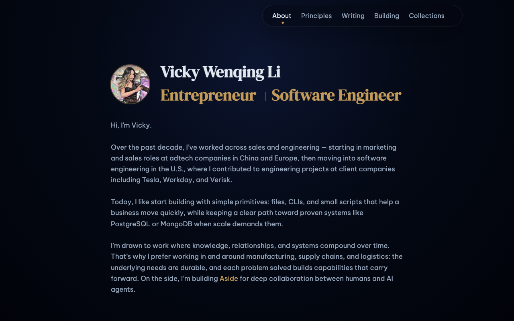
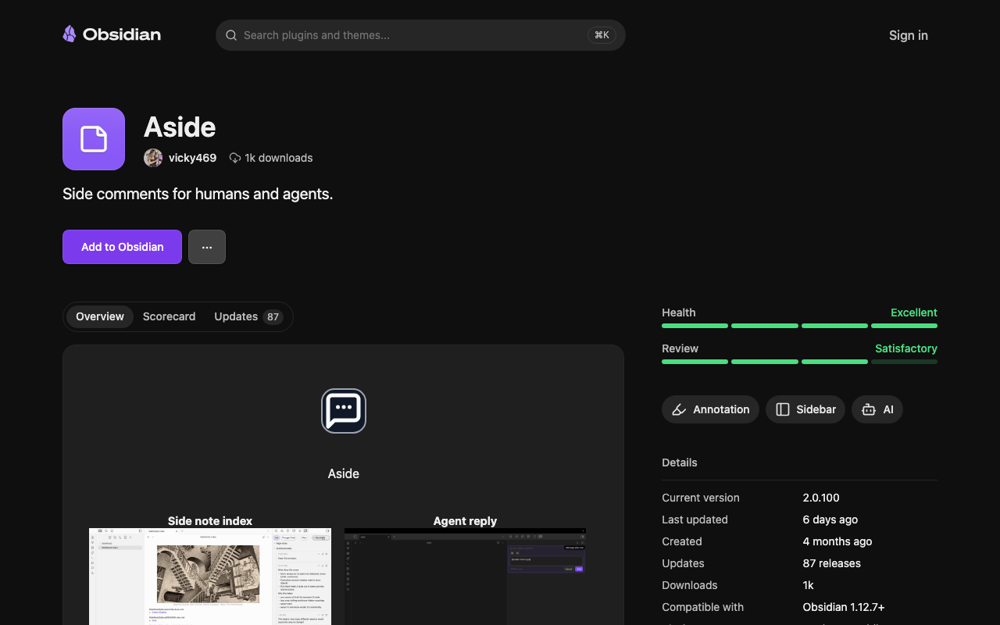
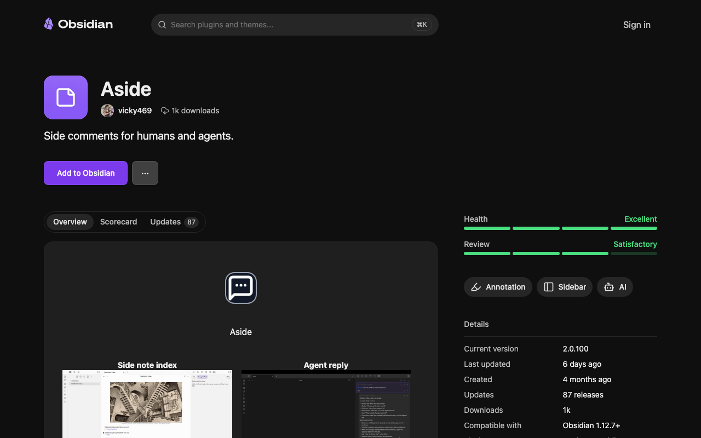
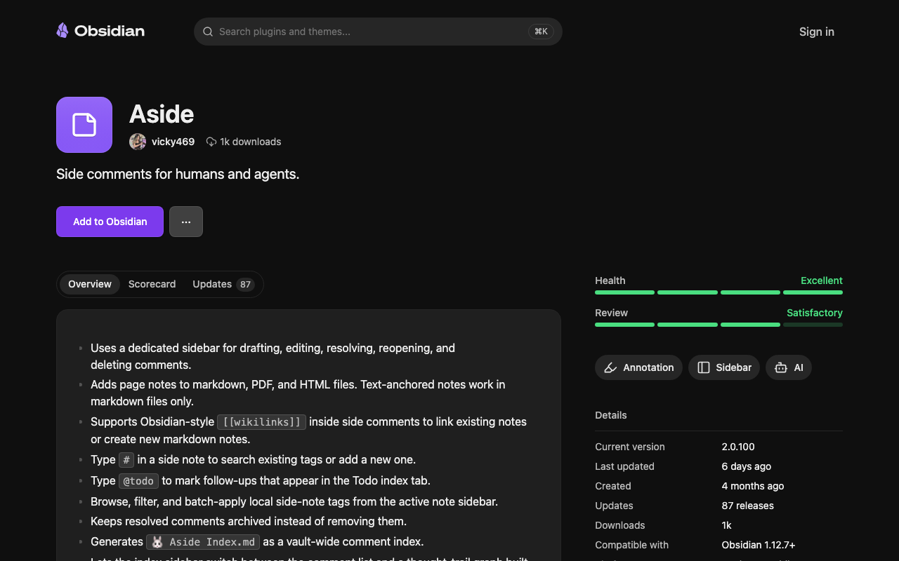
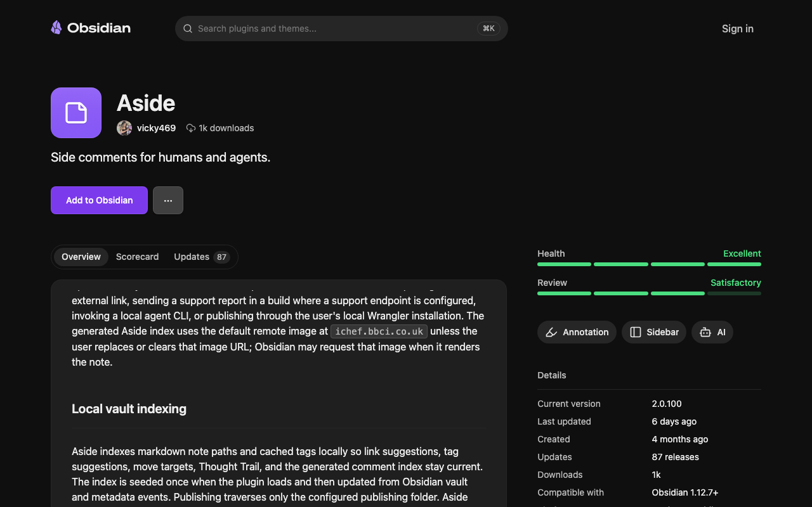
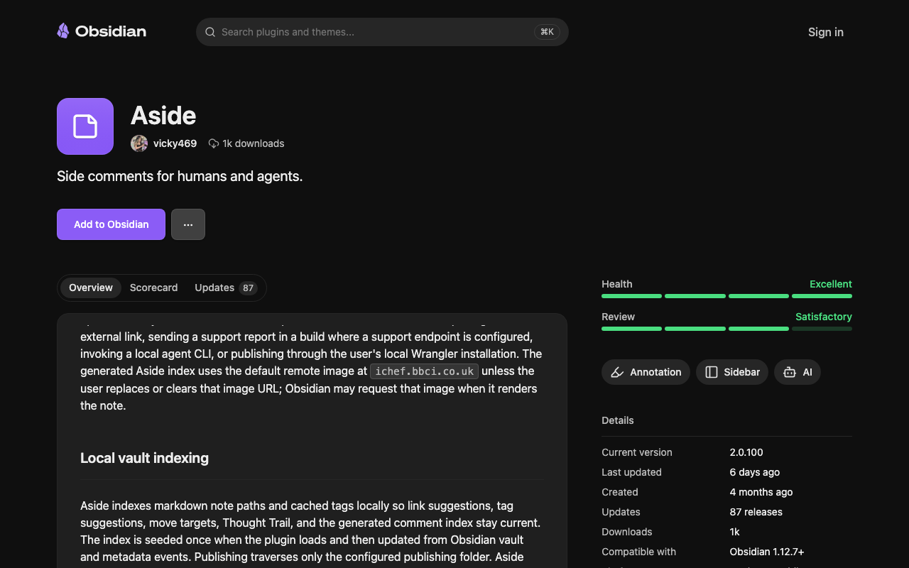

Think aloud: This is a personal site, not a product landing page — kinda unusual. I see Aside mentioned near the bottom, an Obsidian plugin for human-AI collaboration in notes. Let me scroll to that section to see more.
URL/context: https://vickyli.xyz/

Think aloud: I second-guessed this page as a security checkpoint, but there is no CAPTCHA or verification challenge actually present. It is a normal content page, so I will continue instead of pausing.
URL/context: https://community.obsidian.md/plugins/aside

Think aloud: Health excellent, review satisfactory, 1k downloads — decent signal. But I still haven't read the actual feature description, let me scroll down to see the readme.
URL/context: https://community.obsidian.md/plugins/aside

Think aloud: Feature list covers sidebar comments, wikilinks, tags, todos - solid overlap with my Obsidian workflow. Let me scroll more to see install steps or requirements before deciding.
URL/context: https://community.obsidian.md/plugins/aside

Think aloud: The install steps are just: hit Add to Obsidian, that's it for the core plugin. The Cloudflare publishing part is way more involved with dev console hacks though - that's not for me, that's for hardcore testers.
URL/context: https://community.obsidian.md/plugins/aside

Think aloud: Clicking Add to Obsidian just fires a protocol link to open the desktop app - nothing else renders here, no confirmation dialog I can inspect further in-browser. That's expected for Obsidian plugins, not a bug, but it means I can't verify the actual install completes without the app running.
URL/context: https://community.obsidian.md/plugins/aside